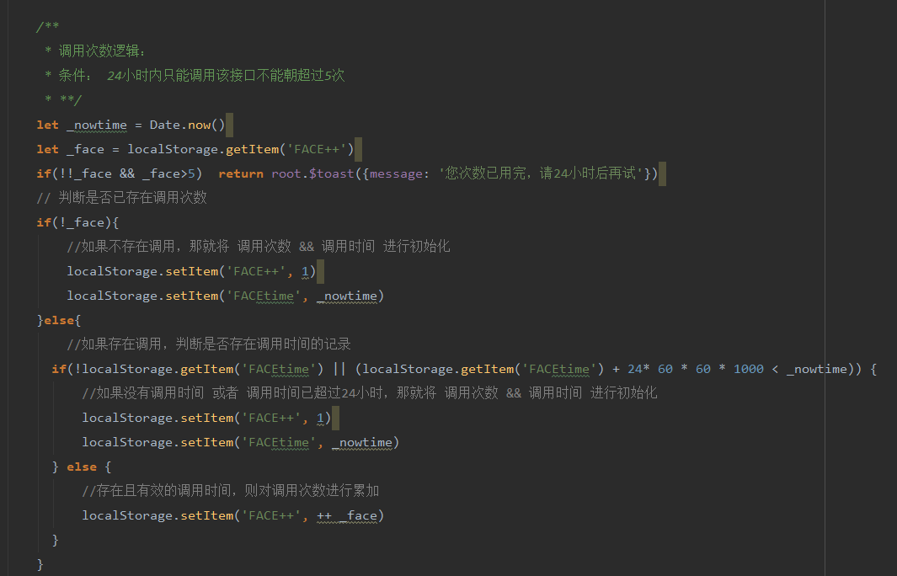

项目需求
领导最近说做一下数据大屏，大概内容就是：每个产品的调用量，每天调用量，每小时调用量，以及全年的调用量，月的每时段均数等..... （我：嗯嗯嗯）然后开始了自己的近一个月断断续续的编写。就在今天后端终于给了我接口（10个），然后自己琢磨了一下这些接口怎么去用之后。 脑子中能想到的点：浏览器不关持续待机状态，页面还要保持持续刷新数据的功能，要确保
这是我现在的代码，虽然可能还有些情况没有考虑到，但是至少比之前的强很多。
